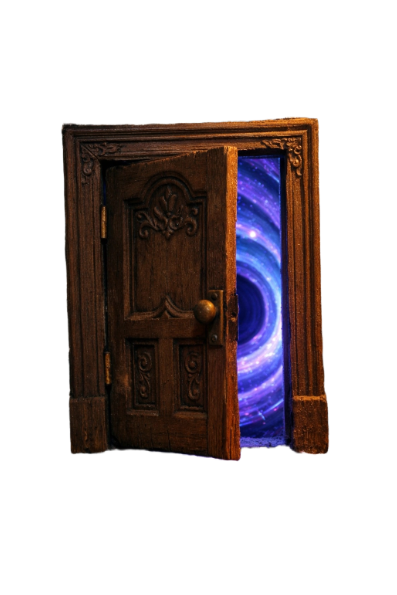
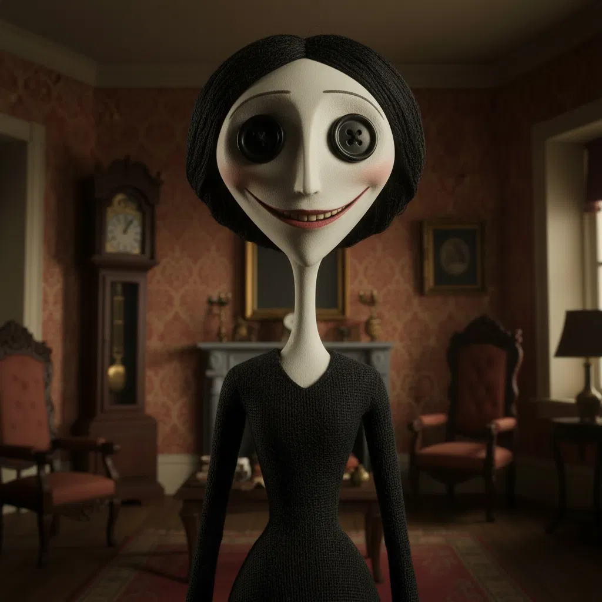
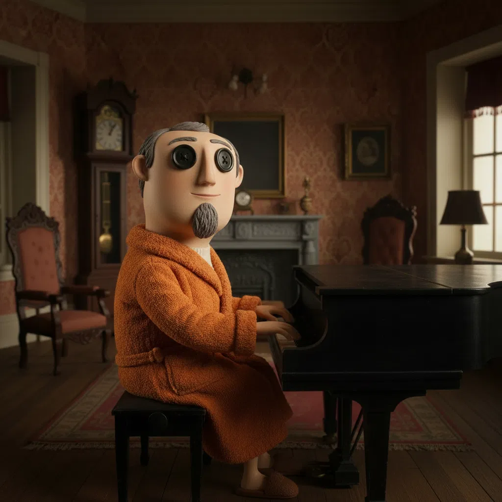
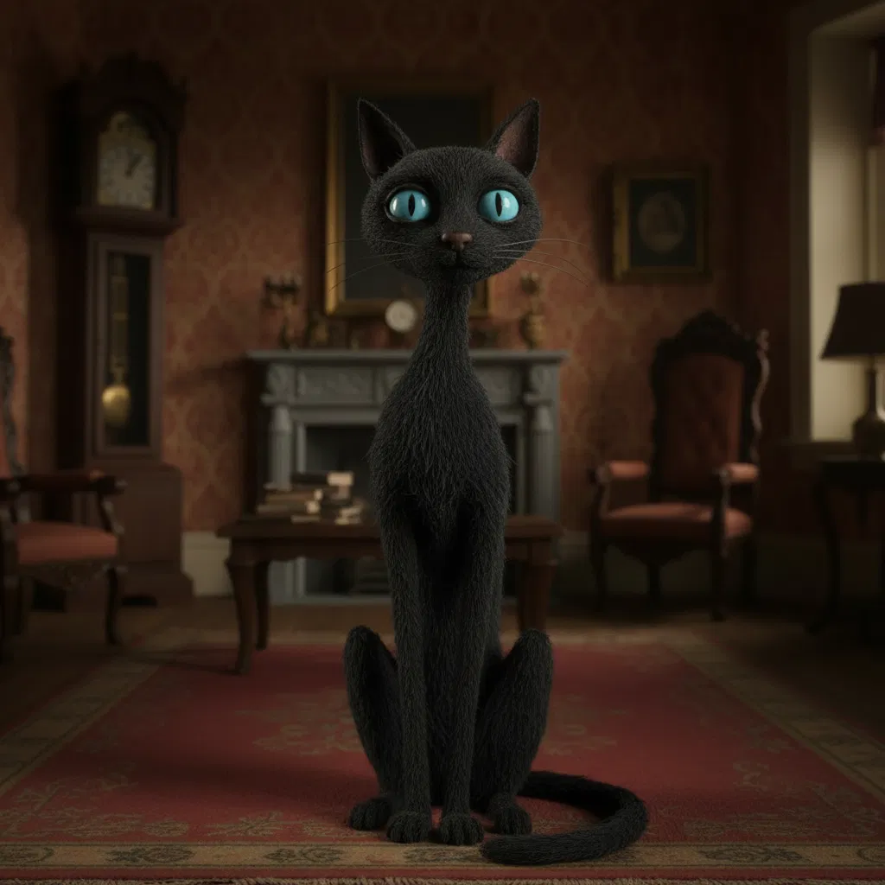
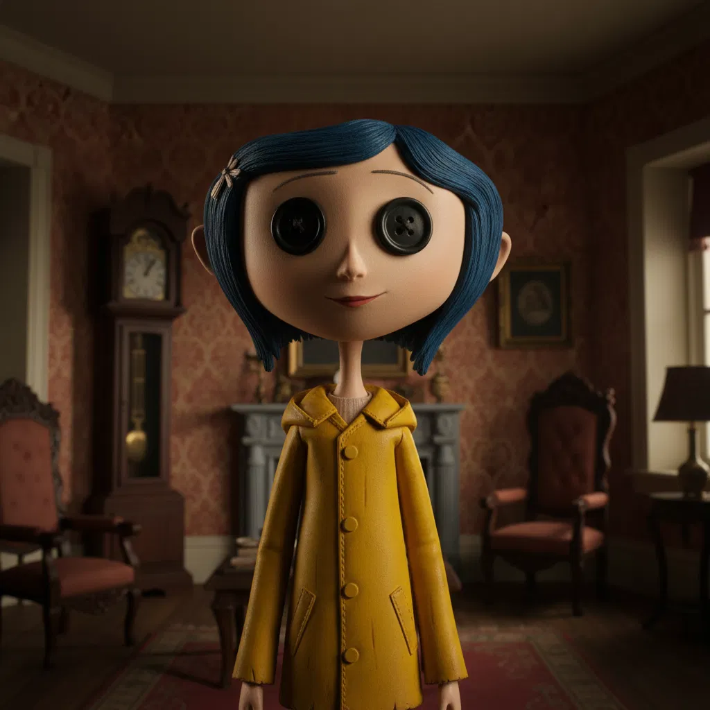

ENTRE

Charmosa e manipuladora, cria uma ilusão perfeita para atrair Coraline, mas revela sua verdadeira natureza assustadora.

Uma versão mais alegre e musical do pai real, controlado pela Outra Mãe e preso à sua vontade.

Misterioso e sarcástico, é o único que transita livremente entre os mundos e ajuda Coraline a enxergar a verdade.

Uma garota curiosa e corajosa que descobre um mundo alternativo aparentemente perfeito, mas que esconde intenções sombrias.